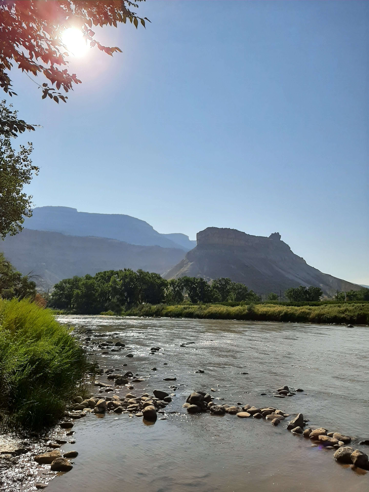

Palisade, CO
Camping and Vineyard Hopping
As much as I feel like a sucker for paying to sleep outside,
the campsite was worth it. Fortunately, I was able to drown my inner
cheapskate with lots of wine, lots and lots of wine!

Let me preface this article by saying that I'm more of a 'beer drinking, dive bar' kind of guy, but what the hell?! I had a crazy hair growing out of my ass and decided to go to the Colorado wine country over on the western slope of the state. So, I went westward by my lonesome self like a cowboy riding off into the sunset, blah blah blah, cliché this and that. People were definitely giving me looks of confusion, which I understand. I definitely don't fall within the target demographic. Too bad I'm not a smooth talker though, because there were a lot of attractive women.
Anyway before I digress, here's a table of the boojee booze makers I visited and other expenses:
| Name/Website | Description | Price | Other Purchases | Total Paid | |
|---|---|---|---|---|---|
| 1 | Palisade Basecamp | The place where I camped. They have tent sites and RV sites. | $45-80 per night | Bought an overpriced 6pack for about 12 bucks | $185.48 includes reservation price, taxes and beers |
| 2 | Paddle Board Adventure Company | Rental shop where I rented an eBike for the day. They also have a bar. | $40/4hrs-$58/8hrs | Spent some time at the bar after my day on the eBike | $83.89 includes tip, taxes, bar tab |
| 3 | Colterris Wines | The first place I stopped, because it was right next door to the campsite. | Bought one of their Malbecs ($28) | $15/wine tasting flight of 5 | $49.80 includes taxes and tip |
| 4 | Clark & Co's Distilling | F***ing moonshine baby. | $18/moonshine tasting flight of 5 | Had an exquisite gin and tonic ($10) and bought a bottle of their gin ($40). | $75.86 includes taxes and tip |
| 5 | Sauvage Spectrum | Loved the pole barn wine tasting area. It was a super casual vibe, more my speed. | $15ish/wine tasting flight | Bought two bottles ($62) because they waive the wine tasting fee when you buy two | $71.80 includes taxes and tip |
| 6 | Maison La Belle Vie | Frenchy. I saved my appetite for this place. | $19/wine tasting flight of 4 | Got some baked brie ($13), some macarons ($9), two bottles of wine ($61) | $107.38 includes taxes and tip |
| 7 | Plum Creek Winery | Best price! and I fell in love with a thing called Pet Nat | $10/wine tasting flight of 5 (with generous pours!) | Bought two more bottles ($46) | $71.21 includes taxes and tip |
| 8 | gas | about 460 miles roundtrip from Denver | ~$120 | ||
| 9 | Food stops | I like my fast food, and there was a huge backup on I-70 so I stopped in Georgetown for a wee bit on my way back. | ~$75 | ||
| Total | ~$840.42 | ||||
The wineries and distillery are listed in order when I visited them. You may have noticed that I got a little looser with my spending as the day progressed. Not sure why that was. Anyway I'm sure the same trip could be done cheaper, especially if one doesn't buy a bottle, or two, at each place... and ate packed food and drove a more fuel effiecient vehicle and so on and so forth. Whatever
 So the camping spot was really neat. I will say their pricing on their website can a be a bit misleading and I recommend calling them up to make your reservation so you get a straightforward quote. I found out about this campground by calling up the different wineries and seeing what they recommended. This site was a great recommendation, in my opinion, but I say that without having price shopped the other campgrounds. What sold me on this one, though, was the location. It is surrounded by some of my favorite vices. There's a dispensary (too bad I've recently quit the pot) and winery right next door... and said winery has a concert stage. If vices are not your fancy then the natural surroundings might appeal to you more. My site was right on the Colorado River and lended itself to some picturesque scenery. At my site I watched a moonrising, which is literally as the name implies but it was cooler to watch with mountains and clear skies. The moon was so bright and the skies were so clear that the moonlight made the Colorado River sparkle. Très romantique, non? This campsite would have been perfect for a couple's getaway. Alas, maybe next time I'll bring an escort.
 Anyway, enough about the 'neature.' What was my route like for this impromptu wine hopping tour? Well,
fortunately for us Google is super creepy and tracks that for me without being asked. So, at least we have
this handy map at the expense of my privacy... hooray invasive surveillance! OK, enough sarcasm from me,
let's get back to talking about the route. Initially, I thought I could walk this. Oh, how naive I was.
Fortunately, someone corrected me of my ignorance and suggested renting an eBike. Boy was I grateful for
that bit of advice. The town of Palisade is much more spread out than the map leads on to believe. Some
form of transport is highly recommended and apparently there is a thriving pedi-cab industry there if you
don't want to rent anything. I also saw horse carriage rides and the typical drunk redneck driving a
diesel-dualy truck. You got options. However, I had a lot of fun with the eBike and it saved me from
sweating my ass off compared with non electric bike. I believe there's three places in town that do eBike rentals and only one place had one left for me. Apparently, it's a popular
option so if you consider that, then maybe reserve yours in advance. The place I rented from also does paddle boards
and a bunch of other stuff. They have a bar so I definitely imbibed in some beer after my wine hopping tour. Is
that alcoholism? If it is then go mind your f***ing business! Lol, now you got me riled up. The shop keeper/bartender
was super friendly and knowledgable. She gave me a bunch of great recommendations and helped me plan the route I took.
One change I would have made is to stay closer to the downtown area because that would have saved me more time to
visit more wineries. Oh well, no regrets! because while Maison La Belle Vie winery was a lengthy jaunt on the eBike,
their food was amazers! So all good suggestions from the fine shop keeper/bartender. However, she will talk your
ear off if you let her. She has fine aspirations to get back to the PNW, and start a kayak rental business which
sounds like a really fun to make a living. Don't worry Liz, if you're reading this, I won't take your idea. Just
acknowledging the genius. Furthermore, she was so welcoming that she invited me to the drag queen show, which I
politely declined because I was quite pooped from my day of being a wine-o Maybe another time.
Anyway, enough about the 'neature.' What was my route like for this impromptu wine hopping tour? Well,
fortunately for us Google is super creepy and tracks that for me without being asked. So, at least we have
this handy map at the expense of my privacy... hooray invasive surveillance! OK, enough sarcasm from me,
let's get back to talking about the route. Initially, I thought I could walk this. Oh, how naive I was.
Fortunately, someone corrected me of my ignorance and suggested renting an eBike. Boy was I grateful for
that bit of advice. The town of Palisade is much more spread out than the map leads on to believe. Some
form of transport is highly recommended and apparently there is a thriving pedi-cab industry there if you
don't want to rent anything. I also saw horse carriage rides and the typical drunk redneck driving a
diesel-dualy truck. You got options. However, I had a lot of fun with the eBike and it saved me from
sweating my ass off compared with non electric bike. I believe there's three places in town that do eBike rentals and only one place had one left for me. Apparently, it's a popular
option so if you consider that, then maybe reserve yours in advance. The place I rented from also does paddle boards
and a bunch of other stuff. They have a bar so I definitely imbibed in some beer after my wine hopping tour. Is
that alcoholism? If it is then go mind your f***ing business! Lol, now you got me riled up. The shop keeper/bartender
was super friendly and knowledgable. She gave me a bunch of great recommendations and helped me plan the route I took.
One change I would have made is to stay closer to the downtown area because that would have saved me more time to
visit more wineries. Oh well, no regrets! because while Maison La Belle Vie winery was a lengthy jaunt on the eBike,
their food was amazers! So all good suggestions from the fine shop keeper/bartender. However, she will talk your
ear off if you let her. She has fine aspirations to get back to the PNW, and start a kayak rental business which
sounds like a really fun to make a living. Don't worry Liz, if you're reading this, I won't take your idea. Just
acknowledging the genius. Furthermore, she was so welcoming that she invited me to the drag queen show, which I
politely declined because I was quite pooped from my day of being a wine-o Maybe another time.